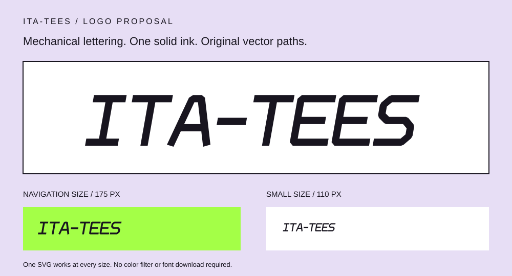

Built from sharp angles.
Slanted, bevel-edged letterforms echo mecha panels and motion. The open A and clipped S add character while keeping the English name readable. This proposal uses one dark ink at every size.

Slanted, bevel-edged letterforms echo mecha panels and motion. The open A and clipped S add character while keeping the English name readable. This proposal uses one dark ink at every size.